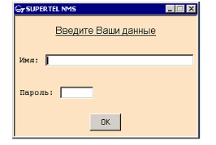
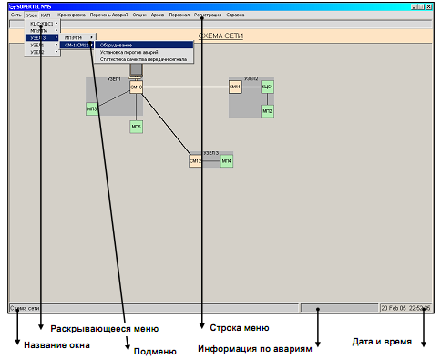
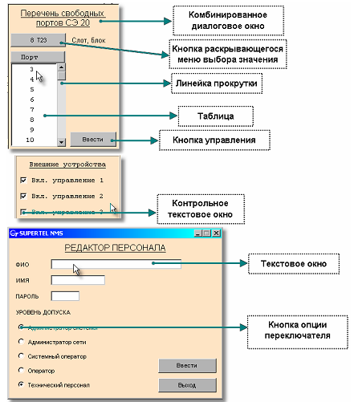

Тема №5. Устройство и эксплуатация цифровых систем телекоммуникаций
Занятие №14. Программное обеспечение СуперТел-NMS.
Учебные вопросы:
Литература:
- Многоканальные системы передачи (часть 2). Учебно-методическое пособие «Аппаратура МКСП с ЧРК». – Мн.: БГУИР, 2010.
- Учебно-наглядное пособие «Альбом схем аппаратуры МКСП». – Мн.: БГУИР, 2010.
- Касанин С.Н., Дюжов Г.Ю. Субботин С.Г. Методическое руководство «Цифровая система передачи MEGATRANS-3M». – Мн., БГУИР, 2010.
1. Применение программного обеспечения СуперТел-NMS.
Управление эксплуатацией синхронных мультиплексоров СМ-1/4(или СМ-1) и сетей связи, основанных на оборудовании СМ-1/4(СМ-1) и включающих иное оборудование, контроль технических характеристик и установка конфигураций и режимов работы осуществляется с помощью сетевой системы управления аппаратурой электросвязи (в дальнейшем сетевая система управления – Network Management System - NMS).
Сетевая система управления (NMS) состоит из компьютера с графиче-ским интерфейсом пользователя, с выделенным (рекомендуется) или невыде-ленным сервером, из сетевых элементов (каждый из которых представляет собой 1 комплект оборудования – 1 систему приема/передачи), соединенных между собой линиями передачи через интерфейсы Ethernet или по каналам DCC, и программного обеспечения сетевой системы управления аппаратурой электросвязи «Супертел-NMS» (в дальнейшем - ПО «Супертел-NMS»).
NMS функционирует на двух уровнях:
- сетевой уровень – управление сетью;
- уровень сетевых элементов – управление сетевыми элементами.
NMS позволяет осуществлять следующие функции:
- управление допуском в NMS;
- редактирование сети связи;
- управление конфигурацией сетевых элементов;
- управление устранением неисправностей;
- контроль технических характеристик.
Задача |
Цель/Содержание |
Номер документа |
|
Средства защиты |
|
7.ТАИЦ.00003-01 34 01 |
|
Редактирование се-тей связи |
|
7.ТАИЦ.00003-01 34 01 |
|
Установка пара-метров блока ТТ-1 (СМ-1) |
|
7.ТАИЦ.00003-01 34 02-1. |
|
Установка пара-метров блока БКС-1 (СМ-1) |
|
7.ТАИЦ.00003-01 34 02-1 |
|
Установка пара-метров блока Т2 (СМ-1) |
|
7.ТАИЦ.00003-01 34 02-1 |
|
Установка пара-метров блока Т34 (СМ-1) |
|
7.ТАИЦ.00003-01 34 02-1 |
|
Установка пара-метров блока БС (СМ-1) |
|
7.ТАИЦ.00003-01 34 02-1 |
|
Установка пара-метров блока БСС (СМ1) |
|
7.ТАИЦ.00003-01 34 02-1 |
|
Установка параметров резервирования |
|
7.ТАИЦ.00003-01 34 02-1 |
|
Установка параметров МП |
|
7.ТАИЦ.00003-01 34 03-1 |
|
Установка параметров КЦС |
|
7.ТАИЦ.00003-01 34 03-1 |
|
Установка параметров РК |
|
7.ТАИЦ.00003-01 34 03-1 |
|
Установка параметров МКСС |
|
7.ТАИЦ.00003-01 34 04-1 |
|
Кроссировка сети |
|
7.ТАИЦ.00003-01 34 01 |
|
Контроль характе-ристик |
|
7.ТАИЦ.00003-01 34 01 |
Рисунок 1 Дерево меню.
2. Порядок работы с программным обеспечением СуперТел-NMS.
Установите программу «Супертел-NMS». Для этого войдите в каталог Supertel-RMUS/Supertel-NMS и запустите файл setup.exe. Программа установки предложит вам выбрать каталог, в который устанавливается ПО «Супертел-NMS». По умолчанию это каталог, в котором находятся c:\Supertel. Если вас устраивает этот каталог, щёлкните по кнопке Далее, в противном случае нажмите на кнопку Изменить для выбора другого каталога. В следующем окне программа установки предложит вам выбрать каталог, в который устанавливаются базы данных ПО «Супертел-NMS». Базы данных ПО «Супертел-NMS» должны находиться в каталоге баз данных MySQL, вам надо указать путь к каталогу баз данных MySQL сервера (например.: D:\MySQL). В следующем окне программа установки отобразит информацию о параметрах установки: каталог, в который установит ПО «Супертел-NMS» и имя пользователя. Если вас это устраивает, нажмите кнопку Установить. В противном случае нажмите кнопку для возврата в предыдущее окно.
В следующем окне нажмите кнопку Готово для окончания установки ПО «Супертел-NMS».
На рабочем столе появится ярлык ПО «Супертел-NMS». В меню кнопки Пуск\Программы будет создан раздел Супертел\Супертел-NMS.
2) Если на компьютере уже установлен MySQL и ПО «Супертел-NMS» предыдущей версии, то перед установкой новой версии необходимо подгото-вить компьютер следующим образом: запустить с инсталляционного диска файл Cleanup\cleanup.exe, который останавливает MySQL сервер и производит удаление SNMP агентов из списка служб Windows. Затем нужно деинсталлировать предыдущие версии MySQL, ПО «Супертел-NMS» и продолжить установку описанным в пункте 1) способом.
Установка ПО «Супертел-NMS» на резервный компьютер осуществляется в полном соответствии с установкой ПО «Супертел-NMS» на основной компьютер. Все соответствующие сетевые настройки (IP адреса и маски, таблицы маршрутизации) обоих компьютеров должны быть идентичны. Одновременная работа основного и резервного компьютеров в одной локальной сети невозможна.
После установки ПО «Супертел-NMS» появится диалоговое окно реги-страции, показанное на рисунке 3.1.
Рисунок 3.1 - Диалоговое окно регистрации.
Введите:
Имя : SUPERTEL
Пароль : 1234
Это заводские установки.
Для перехода из текстового окна Имя в текстовое окно Пароль и дальше к кнопке OK используйте клавишу Tab или мышь.
ВНИМАНИЕ ! После начального входа в систему администратор системы обязательно должен изменить Имя и Пароль с помощью функции Персонал.
Для работы в ПО используется левая кнопка мыши, использование правой кнопки в отдельных случаях оговаривается.
Указание "щёлкнуть мышью" по элементу экрана предполагает следую-щие действия: навести указатель "мыши" на элемент экрана монитора и щёлкнуть кнопкой мыши.
После входа в ПО «Супертел-NMS» откроется диалоговое окно СХЕМА СЕТИ, представленное на рисунке 3.2
Рисунок 3.2
В строке меню указаны имена раскрывающихся меню. При выборе имени-команды открывается меню. Если в выбранном меню справа находится треугольник, появляется подменю (каскадированные меню).
В нижней информационной строке указано название окна, информация по авариям, текущая дата и точное время.
Расположенные в верхнем правом углу кнопки имеют стандартное назначение:
- свернуть окно,
- развернуть окно,
- закрыть окно без сохранения проведенных изменений.
На рисунке 3.3 показаны используемые в программном обеспечении графические средства.
Рисунок 3.3
Комбинированное окно - для установки режимов работы и управления.
Текстовое окно - для ввода информации с клавиатуры.
Кнопка опции переключателя - позволяет выбирать положение/опцию переключателя.
Кнопка управления - для управления/выполнения операций.
Линейка прокрутки- для просмотра информации, не помещающейся внутри окна.
Контрольное текстовое окно - для установки флажка.
Используемые в ПО «Супертел-NMS» средства защиты предназначены для обеспечения нескольких степеней защиты системы связи от несанкциони-рованного допуска к передаваемой по каналам связи информации, от потери или ухудшения качества передачи информации в результате ошибочных дей-ствий персонала.
В ПО «Супертел-NMS» реализована пятиуровневая система допуска персонала к управлению системой связи. Каждый уровень допуска имеет свои разрешения и ограничения на действия в ПО.
Администратор системы - имеет допуск ко всем элементам управления. Только администратор системы определяет пароль для каждого уровня допуска, составляет и редактирует список персонала. Администратор системы добавляет или удаляет пользователей, изменяет атрибуты пользователя, уровни допуска.
Администратор сети - имеет допуск ко всем элементам управления кроме редактора персонала и редактора паролей.
Системный оператор - имеет допуск к редактору сети, к управлению кроссировкой потоков, к установке уровней порогов аварий, к установке параметров и режимов работы блоков.
Оператор - имеет допуск к контролю состава и работы оборудования, контролю и регистрации неисправностей, контролю кроссировки потоков.
Технический персонал - имеет допуск к контролю состава и работы оборудования, контролю неисправностей и к информации по устранению аварий.
Программное обеспечение поставляется с установленными данными пользователя.
По умолчанию Имя и Пароль для входа в систему управления установлены такие:
Имя : SUPERTEL
Пароль : 1234
Уровень допуска по умолчанию установлен - Администратор системы.
ВНИМАНИЕ ! После начального входа в систему администратор системы обязательно должен изменить Имя и Пароль с помощью функции Персонал.
Для этого рекомендуется следующий алгоритм действий:
1) В строке меню окна СХЕМА СЕТИ щёлкните мышью по команде Персонал. В открывшемся подменю выберите команду Список персонала и щёлкните по ней мышью. Откроется диалоговое окно СПИСОК ПЕРСОНАЛА (рисунок 5.1).
2) Нажмите кнопку Добавить запись. Откроется окно РЕДАКТОР ПЕР-СОНАЛА (смотри рисунок 5.2). В текстовых окнах необходимо ввести новые данные пользователя - администратора системы.
3) В текстовых окнах введите:
ФИО: фамилию, имя, отчество пользователя - администратора системы;
ИМЯ: имя пользователя - администратора системы, которое будет вводиться в окне регистрации;
Пароль: пароль пользователя - администратора системы.
4) В кнопочном переключателе УРОВЕНЬ ДОПУСКА установите уровень допуска оператора - выберите кнопку переключателя с соответствующим уровнем допуска:
- администратор системы,
Примечание - Имя и пароль вводятся любыми символами с клавиатуры.
5) Щёлкните мышью по кнопке Ввести для введения учетной записи в список персонала и в базу данных. В списке персонала появится учетная запись нового пользователя – администратора системы.
6) Нажмите кнопку Выход для выхода из окна РЕДАКТОР ПЕРСОНАЛА.
7) Выйдите из ПО через кнопку Выход в подменю Сеть.
8) Войдите в ПО с новыми данными администратора системы.
9) В таблице выделите мышью запись с установленными производителем данными пользователя (с помощью мыши установите стрелочный указатель на необходимую строчку и щёлкните по ней мышью - строчка будет выделена цветом).
10) Нажмите кнопку Удалить запись. Подтвердите удаление в открыв-шемся предупреждающем окне.
Указанная процедура необходима для обеспечения защиты системы связи.
В ПО «Супертел-NMS» реализована система допуска к оборудованию по SNMP протоколу. При изменении паролей допуска к оборудованию администратор системы должен изменить эти пароли в оборудовании с помощью ПО «Супертел-LT».
Допуск для работы с окном ПАРОЛИ ДОПУСКА К ОБОРУДОВАНИЮ имеет администратор системы.